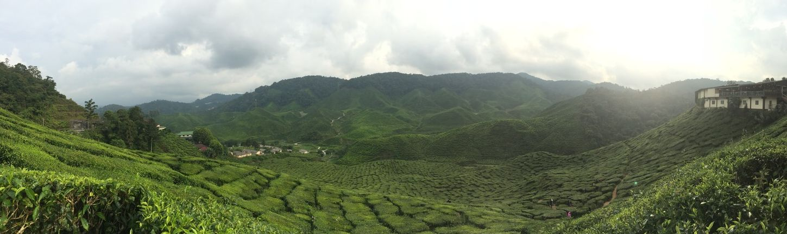

Avanijal Automatic Irrigation controllers
Saves Water, Labour, Fertilizer, Electricity, Ground water pollution. Reduces farmer’s hardship and odd hour farm visits at the same time helps in producing best crop yield. Available at low cost and it is easy to use through any mobile phone.